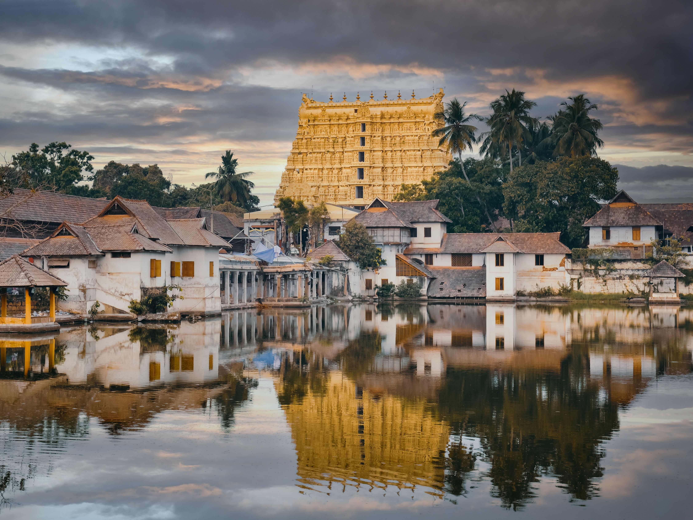
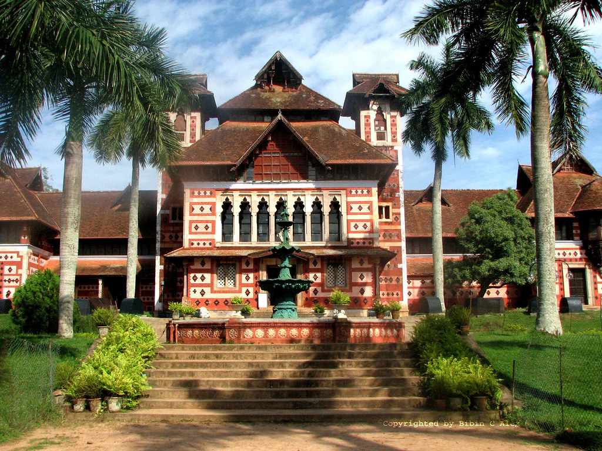
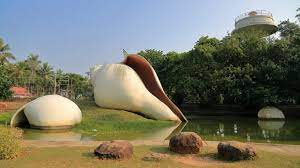
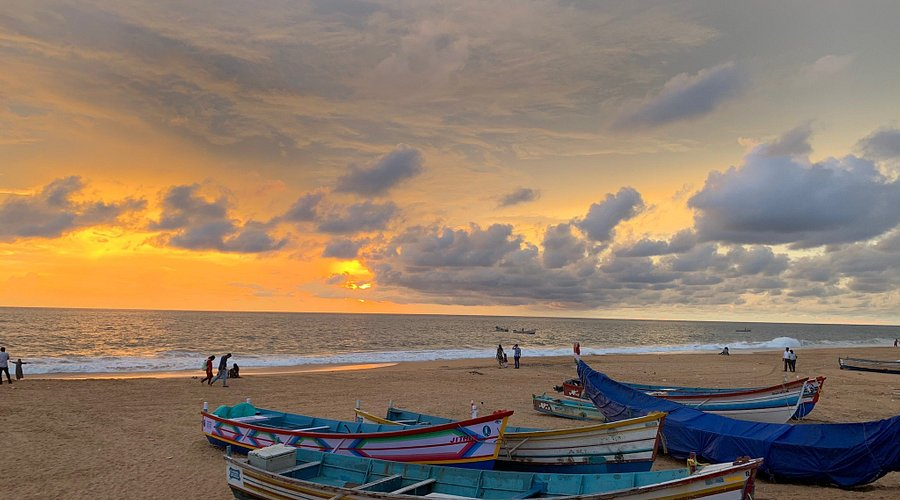

Welcome to Trivandrum
Thiruvananthapuram is Kerala's capital and one of the cleanest and greenest cities in India. The city is home to several prestigious institutions such as ISRO, VSSC, Technopark (India's first IT park), premier educational institutes like IISER, CET, and medical research centers. It offers accessible amenities in health, education, and safety for residents and visitors alike.
Trivandrum is a city of rich history, culture, and natural beauty. From ancient temples to serene beaches, it offers a unique blend of tradition and modernity.
History
- Ancient Era: Known as Ananthapuri, with origins tied to the Padmanabhaswamy Temple.
- 1729: Maharaja Marthanda Varma establishes the Travancore Kingdom.
- 1800s: Becomes capital of Travancore; English education and reforms introduced.
- 1949: Becomes part of the Indian Union.
- 1956: Declared capital of Kerala after state formation.
- Present: Hub of IT (Technopark), ISRO, and cultural excellence.
Upcoming Projects:
- Vizhinjam International Seaport (under development)
- Urban Mobility and Smart City Initiatives
- Tram and Light Metro connectivity (planned)
Location Hunt
- 
Padmanabhaswamy Temple - Historic and spiritual marvel. Best: Oct–Mar
View Map 
Kovalam Beach - Famous for Ayurveda and surfing. Best: Nov–Feb
View Map- 
Napier Museum - Art and cultural history. All year
View Map - 
Veli Village - Boating and lakeside park. Best: Sept–Mar
View Map
Agasthyakoodam - Trekking and sacred peak. Season: Jan–Mar
View Map
Varkala Beach - Cliffs and backwaters. Best: Nov–Feb
View Map
Poovar Island - Serene backwaters and beaches. Best: Sept–Mar
View Map- 
Shanghumukham Beach - Tranquil beach with a beautiful sunset view. Best: Nov–Feb
View Map
Cuisine
Trivandrum is a paradise for food lovers. Enjoy Kerala Sadya served on banana leaves, spicy seafood dishes like fish curry, prawn roast, and traditional snacks like banana chips, pazham pori, and unniyappam.
Hotels & Restaurants
- Vivanta Trivandrum ★★★★☆ – Luxury stay with spa and global cuisine. View Map
- The Central Residency ★★★★☆ – Elegant business hotel near railway station. View Map
- Zam Zam Restaurant ★★★☆☆ – Popular for family dining and Arabian dishes. View Map
- Villa Maya ★★★★★ – Heritage fine-dining restaurant in Dutch manor. View Map
- Mothers Veg Plaza ★★★☆☆ – Highly-rated for traditional Kerala vegetarian meals. View Map
Festivals
Trivandrum celebrates a wide range of vibrant and spiritual festivals throughout the year that reflect the city's rich cultural heritage and religious diversity.
- Onam – Kerala’s grandest festival, marked by floral carpets (pookalam), traditional dance (Thiruvathira), boat races, and the grand Onam Sadya feast.
- Attukal Pongala – Recognized by the Guinness World Records, it is the world’s largest gathering of women offering pongala (sweet rice) to the goddess Attukal Amma.
- Vishu – Kerala's traditional New Year celebrated with Vishukkani (auspicious sight), fireworks, and gifting money (Vishukkaineetam).
- Navaratri – The city comes alive with classical music and dance performances at Navaratri Mandapam, especially near the Padmanabhaswamy Temple.
- Christmas & New Year – Trivandrum’s churches and streets are beautifully illuminated. Festive markets, carols, and beach parties add to the joy.
- Swathi Sangeethotsavam – A music festival held in January to honor Maharaja Swathi Thirunal, featuring classical Carnatic and Hindustani performances.
Transportation
Trivandrum is well connected via air, rail, and road. The Trivandrum International Airport offers domestic and international flights. Buses, autos, and cabs are easily available for local travel.
Transportation
- Trivandrum International Airport – Contact: +91-471-2702311 – Domestic & International flights. View Map
- Thiruvananthapuram Central Railway Station – 24x7 station with city & interstate access. Enquiry: 139 View Map
- KSRTC Bus Terminal – Contact: +91-471-2331661 – State & interstate bus services. View Map
- Private Bus Stand – East Fort – Hub for city buses and private travels. View Map
- Taxi & Auto Service – Popular apps: Uber, Ola, AHA Taxi. Also prepaid stands near station.
- Boating – Akkulam & Veli Lakes – Tourist boating available seasonally.
Contact
For more details or personalized tour plans, contact Kerala Tourism Office:
Department of Tourism, Govt. of Kerala,
Park View, Thiruvananthapuram - 695033, Kerala, India
Emergency Contacts:
- Police: 100
- Fire & Rescue: 101
- Ambulance: 102 / 108
- Women Helpline: 1091
- Child Helpline: 1098
- Government General Hospital: +91-471-2476120
- Postal Head Office: GPO Statue Junction, +91-471-2473666
Key Government Contacts:
- District Collector: collector.tvm@kerala.gov.in
- Corporation Office: +91-471-2450330
- Tourism Department: +91-471-2321132